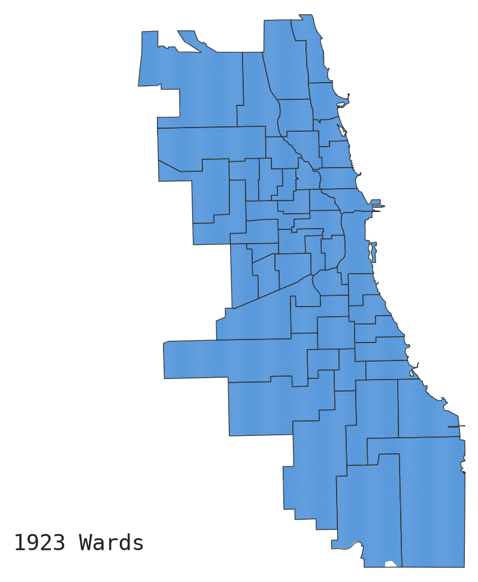

Every ten years, after the census, Chicago redraws its ward map. Those lines are not a technicality. They decide which neighbors are grouped together, whose voices are amplified or split apart, and which communities get a seat at the table when the city decides where money, services, and attention go. A ward map is a statement about who counts as a community worth keeping whole.
For sixty years, race has been at the center of that fight. Since the Voting Rights Act of 1965, redistricting has been one of the most important tools for ensuring that Black and Latino communities can actually elect representatives of their choice, rather than being cracked apart or packed into a single ward so their political power disappears. The hard-won principle was simple: you cannot draw maps that dilute the votes of communities of color.
That principle has been severely weakened. In Louisiana v. Callais, the Supreme Court has moved to limit how much mapmakers may consider racial demographics when they draw district lines, narrowing the Voting Rights Act's central tool for challenging discriminatory maps. The likely consequence is that communities of color will have fewer ways to contest maps that weaken their representation, at the very moment when many cities and states are redrawing lines in ways that break those communities apart.
This raises an urgent question: if racial demographics becomes harder to use as a basis for fair maps, what else could? Our research suggests one answer: the documented history of the maps themselves. Some communities have been shielded from redistricting for a century while others have been carved up again and again. Those histories are a matter of public record, and they reveal patterns of political inequity grounded in the material past. Redistricting history may be a new way to think about map fairness.
Our research question is simple: Which parts of Chicago have never changed wards?
Most conversations about fair maps look at a single moment. We took the opposite approach. We reconstructed Chicago's ward maps from the city's founding in the 19th century all the way to the present. Over the course of its history, Chicago has redrawn its ward maps 24 times, in the following years:
1837 · 1847 · 1857 · 1863 · 1869 · 1876 · 1890 · 1900 · 1910 · 1912 · 1923 · 1931 · 1947 · 1961 · 1970 · 1981 · 1985 · 1995 · 2005 · 2015 · 2023
We asked which areas of the city have stayed in the same ward the longest, untouched while spaces around them were redrawn. We call places that never changed wards untouched communities, and once you can see them, the idea of fair maps looks different.
Ward boundaries shape daily life and have real consequences.
In earlier research, Ternullo, Zorro-Medina, and Vargas showed that redrawing ward lines has consequences for crime and for how the city responds to residents' 311 service requests. When a neighborhood is shuffled into a new ward, the connections between residents, their alderperson, and city services are disrupted, and the people living there can pay the price.
The reverse is just as important: stability accrues advantages. A long line of political science research finds that representation shapes the flow of public dollars. In their landmark study Equal Votes, Equal Money, Ansolabehere, Gerber, and Snyder (American Political Science Review, 2002) found that areas which were politically over-represented received a disproportionate share of public funds, and that equalizing representation shifted billions of dollars toward the places that had been shorted. Communities whose political footing never gets disturbed tend to accumulate resources over time, while communities that are constantly redrawn keep starting over.
Put those two findings together and the stakes of our study come into focus: the neighborhoods that never change wards are exactly the ones best positioned to hold onto political power and public resources, while the neighborhoods that get redrawn again and again absorb the disruption.
Roughly 15% of Chicago's land — 7,141 mapped hexagon cells — has never changed wards across the city's entire history. These untouched areas are not scattered at random. They cluster in 28 pockets, and 20 of them sit inside former independent settlements that were annexed into Chicago in the 1800s: places like Hyde Park, Beverly, Edison Park, Rogers Park, Norwood Park, and Lake View.
Their settlement histories are the key to understanding why. Before they were Chicago neighborhoods, these places were self-governing towns and villages, many of them developed for and by white professionals, merchants, and investors who bought in early and built institutions to protect their property. When Chicago annexed them, state law (e.g. the Annexation Act of 1889) ensured that these settlements had a ward in the city council that stipulated they should not be broken up. Decade after decade, as the rest of the city was redrawn around them, these founding enclaves were left in place.
The result is a pattern that has held for over a century: Chicago has prioritized protecting representation of its more affluent founding settlements since the city's inception. Because those areas were treated as off-limits, the burden of every new map fell elsewhere. When the city had to create new wards where Black and Latino communities could elect their own representatives, those wards had to be carved out of existing Black and Latino neighborhoods, a process that has pitted historically marginalized communities against one another for representation, all while the founding settlements stayed untouched.
Curious about your own block? Chicago has redrawn its wards many times — but maybe not where you live. Enter your address in the map to see how many times your ward has changed, and how long your community has stayed put.
The UChicago Justice Project (UCJP) produces rigorous, independent research on policing, criminal justice, and political inequality in Chicago and beyond. We pair advanced data and geographic analysis with archival and historical research to make visible the structures that shape who gets represented, protected, and served in American cities. We release our data, code, and findings publicly so that residents, journalists, advocates, and policymakers can use them. This project is part of UCJP's ongoing work to bring transparency and evidence to the systems that govern city life.
This project reconstructs the history of Chicago's ward boundaries from the city's 19th-century founding to the present and identifies the areas that never changed wards. Our analysis combined three approaches.
We digitized Chicago's ward maps from the founding era through the most recent remap and laid a fine hexagonal grid over the city. We chose hexagons over city blocks because, over time, the size of city blocks change. Hexagons provide a stable, though not perfect, way to measure spaces consistently over time. For each hexagon, we determined the last time it changed wards, allowing us to classify every piece of Chicago by how long it has remained in place, from cells that have shifted with nearly every remap to a "core" of cells that have never changed wards at all. Mapping tenure this way lets us see stability and change across the whole city at once, rather than one map at a time.
To test whether the untouched areas were systematically linked to Chicago's former independent settlements, we estimated logistic regression models at the census-tract level. Controlling for population size, racial and ethnic composition, income, education, and the foreign-born population, we asked whether tracts located on former settlements were more or less likely to remain in the same ward. They were significantly more likely to stay put, indicating that the pattern is not explained by ordinary demographic differences alone.
Finally, we conducted archival research to reconstruct how these communities avoided redistricting. Drawing on historical ward maps, newspaper coverage, records from redistricting lawsuits and city council deliberations, land and property records, and archival collections, we traced three recurring mechanisms: the incorporation of independent settlements into the city, the codification of their boundaries through law and precedent, and the adjudication of redistricting disputes in ways that repeatedly treated these founding areas as "natural" communities not to be divided.
Together, these methods let us do more than show that some communities never change wards — they let us explain why, and connect a century of mapmaking decisions to the political inequities visible in Chicago today.
Full data and code: [repository link]